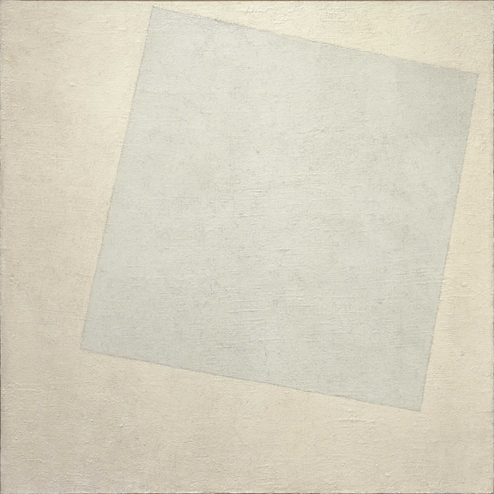

Kazimir Malevich
Blanco sobre Blanco (1918)
El silencio absoluto del color. Cuadrado blanco sobre fondo blanco — variabilidad cromática casi nula. Punto de partida de la escala.
Perfil SonoroFrecuencia dominante: grave, casi inaudible. Textura: tono puro sin armónicos. Dimensión fractal mínima — el sonido más cercano al silencio que genera estructura.
Escuchar sonificación